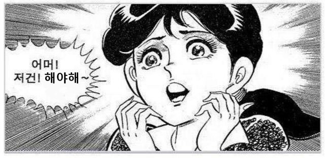
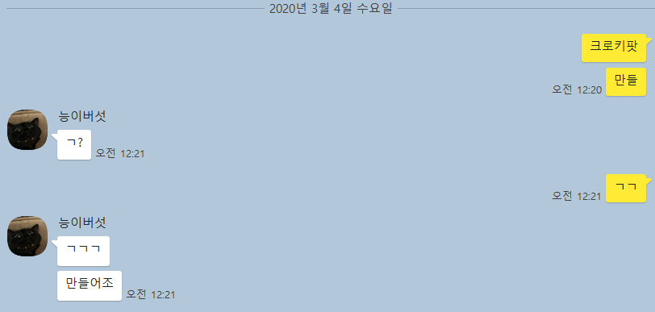
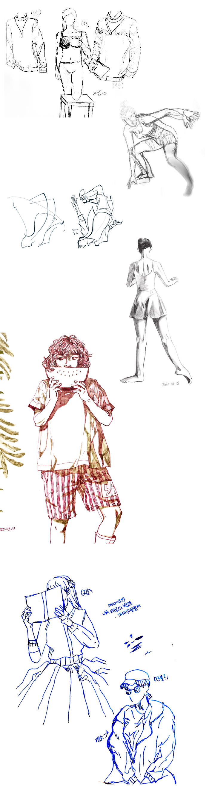

익명의 크로키 모임
오픈톡 기능을 사용하여 사람들을 불러모았기 때문에, 이들은 서로 모르는 상태다. (물론 이 사람들을 불러모은 나는 알 수 있었다.) 모두 즉석에서 만든 닉네임을 사용해 익명성이 생겼다.

굳이 이런 방법을 택한 이유? 이런식으로 익명성이 보장된다면, 서로의 그림을 공유하고 토론하기 더 편하리라 생각했기 때문이다.
아무것도 안 하며 뒹굴거리며 보내던 겨울방학, 그런 날 보며 갑자기 친구가 하는 말.
“야, 우리 있잖아… 우리 크로키 모임 만들지 않을래?”
… 라고 한 뒤로 한 달이 지났다.
점점 마음이 급해져 왔기에, 크로키 모임을 언급했던 친구에게 이번엔 내가 먼저 크로키모임을 만들자고 제안했다.
그림을 그리는 사람들이지만 그림을 지지리도 안 그리는 사람들을 위한 모임이었기에, 두명 뿐인 모임이라면 분명 작심삼일도 못될 것이 분명했다. 때문에 인원을 모집해야했다. 여러 그룹에서 내가 아는 그림쟁이들을 몇명씩 불러모았다. 초등학교 동창에서 부터 중학고,고등학교 동창, 대학교 동기까지. 그림을 그린다고 하는 인맥을 동원했다.
그렇게 구성된 인원은 총 9명.
오픈톡 기능을 사용하여 사람들을 불러모았기 때문에, 이들은 서로 모르는 상태다. (물론 이 사람들을 불러모은 나는 알 수 있었다.) 모두 즉석에서 만든 닉네임을 사용해 익명성이 생겼다.
굳이 이런 방법을 택한 이유? 이런식으로 익명성이 보장된다면, 서로의 그림을 공유하고 토론하기 더 편하리라 생각했기 때문이다.
여러곳에서 모아왔기에 하는일이 중구난방인 친구들이다. 웹툰을 준비하느라 바쁜 친구, 그림을 많이 그려보지 않은 친구,… 하지만 꾸준히 그림을 그리고는 싶은 친구들로만 모았기에 모두를 포용할 수 있는 느슨한 조건이 필요했다.
첫번째 조건, 크로키 모임이긴 하지만 굳이 크로키를 하지 않아도 될 것.
두번째 조건, 그림의 장수는 상관 없을 것.
세번째 조건, 재료와 툴 또한 상관 없을 것.
네번째 조건, 매일 자신의 개인 sns 에 흔적이 남도록 올릴 것.
하지만 꿋꿋하게 크로키라는 단어를 고수했다. 이유는 단순했다. 내가 크로키를 하기 때문이다
다행스럽게도, 다수의 친구들이 크로키를 해주었다.
생각보다 많은 숫자였다. 물론 개인적인 그림을 그리는 친구도 있었다. 딱 한명! 모임의 이름을 바꿔야하나 생각한것이 무색했다. 모두들 하루에 한 장 이상 크로키를 그렸다. 굳이 그림을 그리라고 재촉하지 않았는데도 말이다.
매일매일 크로키나 그림을 한 장 이상을 그린다는 모임의 목적에 맞게, 지금도 모두 열심히 그림을 그리고 있다.
작금의 목표는 매일매일 빠지는 일 없이 하루에 한 장씩 그림을 그리는 것이었다.
지금까지는 나 자신이 꾸준히 그림을 그릴 수 있다는 것을 확인한 것이었다면, 이제부터는 실력을 쌓아 올릴 차례가 되었다.
어떻게 실력을 쌓을 생각이냐고 묻는다면, 그림을 잘 그리려면 어떻게 해야하나요? 라는 질문을 들었을 때 많은 ‘존잘’들이 하는 말을 해주고 싶다.
“ 많이 그리세요!! ”